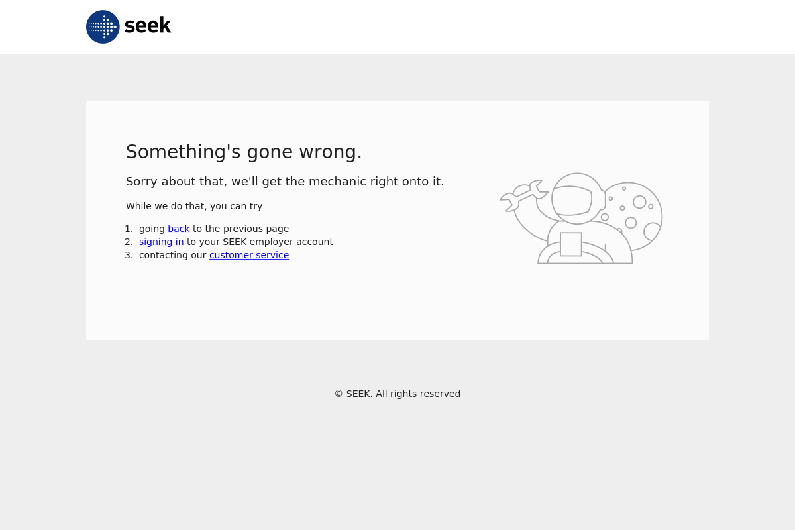

Generated by LazyRecon on Tue May 21 07:56:06 EDT 2019
Port 80 Port 443 
; <<>> DiG 9.11.4-2-Debian <<>> authenticate.seek.com.au ;; global options: +cmd ;; Got answer: ;; ->>HEADER<<- opcode: QUERY, status: NOERROR, id: 29552 ;; flags: qr rd ra; QUERY: 1, ANSWER: 4, AUTHORITY: 0, ADDITIONAL: 1 ;; OPT PSEUDOSECTION: ; EDNS: version: 0, flags:; MBZ: 0x0005, udp: 512 ;; QUESTION SECTION: ;authenticate.seek.com.au. IN A ;; ANSWER SECTION: authenticate.seek.com.au. 5 IN A 54.192.151.18 authenticate.seek.com.au. 5 IN A 54.192.151.89 authenticate.seek.com.au. 5 IN A 54.192.151.83 authenticate.seek.com.au. 5 IN A 54.192.151.7 ;; Query time: 180 msec ;; SERVER: 192.168.58.2#53(192.168.58.2) ;; WHEN: Tue May 21 07:56:06 EDT 2019 ;; MSG SIZE rcvd: 117
authenticate.seek.com.au has address 54.192.151.7 authenticate.seek.com.au has address 54.192.151.83 authenticate.seek.com.au has address 54.192.151.89 authenticate.seek.com.au has address 54.192.151.18
HTTP/1.1 301 Moved Permanently Server: CloudFront Date: Tue, 21 May 2019 11:56:08 GMT Content-Type: text/html Content-Length: 183 Connection: keep-alive Location: https://authenticate.seek.com.au/ X-Cache: Redirect from cloudfront Via: 1.1 a4e03b25c402f8e111eba098232bf16f.cloudfront.net (CloudFront) X-Amz-Cf-Id: Hg2GQkzxeZyRDxEyQfbynoYLzbFMyHD3EDwLQu_I5THxqtH8zJigiA== HTTP/1.1 302 Moved Temporarily Content-Type: text/plain; charset=utf-8 Content-Length: 203 Connection: keep-alive Date: Tue, 21 May 2019 11:56:09 GMT X-Auth0-RequestId: 486a6f1dde06dd62e204 Set-Cookie: _csrf=c8Ux2-izFZhaE8Dyu7Mx-737; Max-Age=864000000; Path=/usernamepassword/login; HttpOnly; Secure Set-Cookie: auth0=s%3AjQuy6OhcuFAf1_urq0mlyePP-df3dwc4.HeIsLvRC19jjm%2Fun15ocIzdv5TKBO9pg4GF9cGW55p4; Path=/; Expires=Thu, 20 Jun 2019 11:56:09 GMT; HttpOnly; Secure X-Robots-Tag: noindex, nofollow Location: https://seekcdn.com/online-auth/error-page/error.html?client_id=&connection=&lang=&error=invalid_request&error_description=missing%20client%20parameter&tracking=486a6f1dde06dd62e204 Cache-Control: private, no-store, no-cache, must-revalidate, post-check=0, pre-check=0 Strict-Transport-Security: max-age=15724800 X-Robots-Tag: noindex, nofollow, nosnippet, noarchive Vary: Accept X-Cache: Miss from cloudfront Via: 1.1 d8bc31f1690f46d533b518410accf19f.cloudfront.net (CloudFront) X-Amz-Cf-Id: r6dW9w0nCQhSq4ZXyblDborCUzsPstEGnxxhdRBtju9JNa-0348Vvg== HTTP/2 200 content-type: text/html content-length: 1506 date: Tue, 21 May 2019 11:56:11 GMT last-modified: Thu, 16 May 2019 04:07:49 GMT etag: "fc6e4cc147473662be5cfc0660921815" cache-control: max-age=60 accept-ranges: bytes server: AmazonS3 vary: Accept-Encoding x-cache: Miss from cloudfront via: 1.1 c990fd3cbc5e1d66f96bf1b40c6cc68e.cloudfront.net (CloudFront) x-amz-cf-id: A813DX17JRKKDjF0O6LxaELZw14VoVwTx2j4PcJhtYtTyCQYSieP0A==
nmap -sV -T3 -Pn -p3868,3366,8443,8080,9443,9091,3000,8000,5900,8081,6000,10000,8181,3306,5000,4000,8888,5432,15672,9999,161,4044,7077,4040,9000,8089,443,7447,7080,8880,8983,5673,7443 Starting Nmap 7.70 ( https://nmap.org ) at 2019-05-21 07:56 EDT Nmap scan report for authenticate.seek.com.au (54.192.151.18) Host is up (0.11s latency). Other addresses for authenticate.seek.com.au (not scanned): 54.192.151.89 54.192.151.83 54.192.151.7 rDNS record for 54.192.151.18: server-54-192-151-18.sin2.r.cloudfront.net Not shown: 32 filtered ports PORT STATE SERVICE VERSION 443/tcp open ssl/http Amazon CloudFront httpd Service detection performed. Please report any incorrect results at https://nmap.org/submit/ . Nmap done: 1 IP address (1 host up) scanned in 20.81 seconds